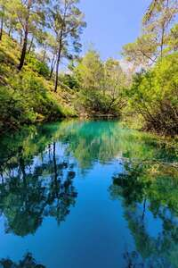
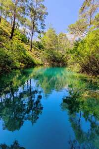

Paulo Martins
Student
Paris Cité University


 



I am a 19 years old student, in love with computer science in general but also with photography and music. I did 5 years of piano in a conservatory. Apart from that I like sports area, indeed I go to the gym frequently because sport is good! And that's pretty much my life :D
My curiosity for computers started at a young age when I started to get bored with video games where a certain redundancy starts to set in. At that point I wanted to look into mods and cracks that allow you to really customize video games, and so one question I asked myself that day was, how does it all work? And that's how I got into computers. After that, I started to train myself on different languages and methods of video game development mainly, and then I really knew that computer science was the field I wanted to focus on the day I completed the development of my first game, a video that was a small remake of The Minesweeper. By this occasion I want to complete my computer science studies and I think to go to a master rather than an engineering school, to finally finish as a developer, not in video games unfortunately, because the industry is quite complicated nowadays but I still leave myself some time to think about my future projects.
During all these years I had the chance to travel in some countries located in the European Union and even in Africa with the trip in Tunisia.
| Country | City | Year | Mark |
|---|---|---|---|
| Portugal | Porto | 2006 | 18/20 |
| Greece | Rhodos | 2022 | 18/20 |
| Spain | Sevilla | 2013 | 15/20 |
| Tunisia | Djerba | 2004 | 14/20 |
| France | Paris | 2012 | 13/20 |
| Italia | Aoste | 2012 | 12/20 |